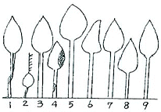
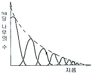
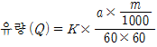
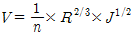
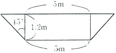

산림기사 (2009-07-26 기출문제)
1과목: 조림학
1. 고정생장의 유형에 해당하는 수종은?
- 포플러류
- 낙엽송
- 잣나무
- 은행나무
(정답률: 51%)

2. 침엽수종 중 삽목발근이 용이한 수종은?
- 연필향나무
- 잣나무
- 낙엽송
- 전나무
(정답률: 62%)
3. 종자의 품질을 나타내는 기준인 순량율이 50%, 실중이 60g, 발아율이 90%라고 할 때, 종자의 효율은?
- 30%
- 54%
- 27%
- 45%
(정답률: 78%)
4. 1년생 소나무류 묘목을 판갈이(상체작업)할 때 1m2에 대개 어느 정도의 밀도(본수)로 심는가?
- 36 ~ 49주
- 81 ~ 100주
- 144 ~ 196주
- 400주
(정답률: 74%)
5. 후숙을 필요로 하지 않는 수종은?
- 아까시나무
- 버드나무류
- 피나무류
- 산수유
(정답률: 67%)
6. 제벌작업에 대한 설명으로 옳은 것은?
- 일반적으로 벌채목을 이용한 중간수입을 기대할 수 있다.
- 윤벌기 내에 1회로 작업을 끝내는 것이 원칙이다.
- 소나무나 낙엽송 조림지의 최초 제벌은 흔히 조림 후 10년 이전인 7~8년 만에 실시하는 것이 보통이다.
- 제초제 또는 살목제(殺木濟)를 사용할 수 없다.
(정답률: 70%)
7. 지하 자엽형으로 발아하는 수종으로만 짝지어진 것은?
- 소나무, 잣나무
- 아까시나무, 버즘나무
- 밤나무, 칠엽수
- 단풍나무, 물푸레나무
(정답률: 72%)
8. 수목의 줄기를 구성하는 다음 조직 중에서 수분이 이동하는 주요 통로가 존재하는 곳은?
- 수(pith)
- 목부(xylem)
- 사부(phloem)
- 형성층(cambium)
(정답률: 82%)
9. 간접적 지위평가법에 해당되지 않는 것은?
- 구간법
- 지표식물에 의한 접근
- 지위지수
- 점밀도법
(정답률: 60%)
10. 다음 그림은 데라사끼 수관급(또는 수목급)을 나타낸 것이다. 이중 8번의 나무는 어느 급에 해당하는가?

- 1급목
- 2급목
- 3급목
- 4급목
(정답률: 67%)
11. 우량묘의 조건을 가장 옳게 설명한 것은?
- 가지가 특정한 방향으로 뻗어 발달한 것
- 온도의 저하에 따른 고유의 변색(變色)과 광택을 가지고 있을 것
- 발육이 완전하고 조직이 충실하며 측아의 발달이 잘 되어 있는 것
- 지상부보다 지하부의 측근과 세근의 발달이 왕성한 것
(정답률: 62%)
12. 산림작업의 하나의 체계에 해당하는 숲이 다음과 같은 구조로 나타날 경우 어떻게 해석할 수 있는가?

- 동령림으로 구성되어 있는 산림
- 순환벌채를 받고 있는 택벌림
- 벌채를 받은 일이 없는 산림
- 우리나라 소나무 숲에 흔히 나타나고 있는 구조
(정답률: 75%)
13. Moller의 항속림사상(恒續林思想)의 강조 내용으로 옳게 설명한 것은?
- 정해진 윤벌기에 군산목택버을 원칙으로 한다.
- 항속림은 이령혼효림이다.
- 벌채목의 선정은 산벌작업의 선정기준에 준해서 한다.
- 갱신은 인공갱신을 원칙으로 한다.
(정답률: 63%)
14. 임목의 개화결실을 촉진시키는 방법으로 잘못된 것은?
- 수관의 울폐
- 시비
- 호르몬 사용
- 환상박피
(정답률: 71%)
15. 수목은 토양의 무기양료가 부족하면 여러 가지 생리반응이 나타난다. 잎의 황화현상(chlorosis)을 일으키는 무기양료가 아닌 것은?
- N
- Mg
- Fe
- Cl
(정답률: 69%)
16. 잣나무 가지치기작업에서 절단부의 직경이 2㎝ 정도이면 융합에 소요되는 연수는?
- 1년 이내
- 2 ~ 3년
- 4 ~ 5년
- 6 ~ 7년
(정답률: 41%)
17. 토양층위를 O, A, B, C, R층으로 구분했을 때 빗물이 아래로 침전하면서 부식질 ㆍ 점토 ㆍ 철분 ㆍ 알루미늄 성분 등을 용탈하여 내려가다가 집적해 놓은 토양층은?
- A0층
- A층
- B층
- C층
(정답률: 76%)
18. 생가지치기를 하는 경우 상구(傷口)가 부후(腐朽)하는 위험성이 가장 큰 수종은?
- 소나무류
- 단풍나무류
- 포플러류
- 삼나무
(정답률: 85%)
19. 온량지수(溫量指數, warmth index)가 15이하인 곳의 생물군계를 무엇이라 하는가?
- 열대림
- 온대림
- 아한대림
- 툰드라
(정답률: 58%)
20. 제벌에 관한 설명으로 가장 적당한 것은?
- 주로 간벌기에 실시한다.
- 시기는 여름철이 유리하다.
- 미래목 제거가 주목적이다.
- 조림지에서는 우량목이 대상이 된다.
(정답률: 74%)
2과목: 산림보호학
21. 겨우살이에 대하여 잘못 설명한 것은?
- 겨우살이 열매는 새들의 먹이가 되므로 절대 제거해서는 안된다.
- 주로 종자를 먹은 새(조류)의 배설물에 의해 전파된다.
- 주로 참나무류에 피해가 심하고 그 밖의 활엽수에도 기생한다.
- 겨울철에도 잎이 떨어지지 않으므로 쉽게 발견할 수 있다.
(정답률: 74%)
22. 소나무 혹병의 방제법이 아닌 것은?
- 중간기주인 참나무류 제거
- 병환부나 병든 묘목을 일찍 제거하여 소각
- 배수가 불량한 과습지에 배수구 설치
- 소나무류의 묘목에 4-4식 보르도액 살포
(정답률: 48%)
23. Gymnosporangium asiaticum이 향나무에서 배나무로 침입하는 포자형태는?
- 겨울포자
- 녹포자
- 담자포자
- 여름포자
(정답률: 46%)
24. 잣나무 털녹병균의 기주교대를 하는 것은 무엇인가?
- 애기똥풀
- 매발톱
- 참나무류
- 송이풀
(정답률: 80%)
25. 식물에 침입한 병원체가 그 내부에 정착하여 기주관계가 성립되었을 때의 단계는 무엇인가?
- 발병
- 병징
- 표징
- 감염
(정답률: 72%)
26. 산림에서 가장 많이 발생하는 삼불종류는?
- 지표화
- 수관화
- 지중화
- 수간화
(정답률: 62%)
27. 그을음병을 방제하는데 가장 알맞은 방법은?
- 질소질 비료를 충분히 준다.
- 진딧물과 깍지벌레 등을 구제한다.
- 토양소독을 철저히 한다.
- 종자소독을 철저히 한다.
(정답률: 76%)
28. 대추나무 빗자루병의 발병 원인은?
- 바이러스
- 파이토플라스마
- 선충
- 진균
(정답률: 82%)
29. 다음 수병 중 산불이 발생한 지역에서 특히 많이 발생할 것으로 예측되는 병은?
- 낙엽송 잎떨림병
- 리지나뿌리썩음병
- 잣나무 가지마름병
- 소나무 잎녹병
(정답률: 79%)
30. 밤나무 줄기마름병균 등 자낭균류는 자낭포자와 분생포자(병포자)를 형성한다. 그림과 같은 포자의 명칭은?
- 자좌(子坐)
- 자낭각
- 병자각
- 자낭반
(정답률: 66%)
31. 흰가루병의 병환부가 흰가루 같이 보이는 것은?
- 흰색의 균사가 자라서 덮는 것이다.
- 표피가 변색되었기 때문이다.
- 2차적으로 침입한 부생균 때문이다.
- 표피면에 형성된 자낭구 때문이다.
(정답률: 66%)
32. 소나무 잎녹병의 중간기주는?
- 향나무
- 등나무
- 황벽나무
- 딱총나무
(정답률: 67%)
33. 잣나무 털녹병을 예방하기 위한 가장 중요한 작업은?
- 중간기주의 제거
- 이병목의 제거
- 하예작업
- 약제살포
(정답률: 72%)
34. 오동나무 빗자루병의 매개곤충으로 알려진 것은?
- 진딧물
- 마름무늬매미충
- 담배장님노린재
- 끝동매미충
(정답률: 70%)
35. 모잘록병을 방제하기 위한 가장 효과적인 방법은?
- 질소질 비료를 준다.
- 배수와 통풍으로 개선한다.
- 후파(厚播)를 한다.
- 종자가 늦게 발아하도록 한다.
(정답률: 77%)
36. 수목병의 원인 중 뿌리혹병, 불마름병, 세균성 구멍병 등의 원인이 되는 생물적 원인은?
- 곰팡이
- 세균
- 바이러스
- 선충
(정답률: 74%)
37. 소나무 시들음병을 일으키는 소나무재선충이 수목 간을 이동하는 경로는?
- 종자전염
- 매개충
- 바람
- 토양전염
(정답률: 80%)
38. 수목에 병을 일으키는 직접적인 주요 요인은?
- 소인(素因)
- 유인(誘因)
- 발원(發源)
- 병원(病源)
(정답률: 76%)
39. 수목병, 원발생지(원산지), 대발생지역을 순서대로 묶은 것이다. 틀린 것은?
- 소나무재선충 - 미국 - 아시아
- 밤나무 줄기마름병 - 유럽 - 아시아
- 느릅나무 시들음병 - 네덜란드 - 미국
- 잣나무 털녹병 - 러시아 - 미국
(정답률: 60%)
40. 나무좀, 하늘소, 바구미 등과 같은 천공성 해충을 방제하는데 다음 중 가장 적합한 방법은?
- 온도처리법
- 통나무 유살법
- 경운법
- 훈증법
(정답률: 85%)
3과목: 임업경영학
41. 산림평가의 정의로 가장 적합한 것은?
- 산림피해의 손실액과 보상액 산정
- 산림을 구성하는 임지 ㆍ 임목 ㆍ 부산물 등의 경제적 가치를 평가
- 산림을 분할 또는 병합할 때의 가격산정
- 재산목록 또는 대차대조표를 작성할 때의 재산가치 결정
(정답률: 75%)
42. 컴퓨터의 발전과 더불어 산림경영계획 분야 및 산림의 다목적 이용계획에 적용하는 수학적 분석기법으로 가장 널리 임업분야에서 사용되는 방법은?
- 선형계획법
- 동적계획법
- 비선형계획법
- 그물망분석법
(정답률: 81%)
43. 현재의 임목가치가 10000원 일 때, 이자율 4%로 4년동안 임지에 존치하였다면 4년 동안의 임목가치 증가는 약 얼마인가?
- 10000원
- 11699원
- 1699원
- 2699원
(정답률: 51%)
44. 임업 순수익의 계산 방법은?
- 임업조수익 + 임업경영비
- 임업조수익 + 가족임금추정액
- 임업조수익 - 감가상각액
- 임업조수익 - 임업경영비 - 가족임금추정액
(정답률: 80%)
45. 산림에 대한 인식을 단순히 경제적인 역할에만 한정하지 않고, 사회적 ㆍ 경제적 ㆍ 생태적 문화 및 정신적 역할로 인식하여 산림을 경영하고자 하는 것을 무엇이라 하는가?
- 보속수확 산림경영
- 지속가능한 산림경영
- 다목적이용 산림경영
- 다자원적 산림경영
(정답률: 72%)
46. 야외 휴양 시설 설계의 원칙에서 고려되어야 할 사항이 아닌 것은?
- 시설 유지의 용이성
- 획일성
- 지역에의 적합성
- 접근성
(정답률: 79%)
47. 어느 임목의 흉고직경은 20㎝, 수고는 15m, 그리고 형수는 0.4를 적용하였을 경우 이 임목의 재적은 약 몇 m3인가?
- 0.1885
- 0.0240
- 0.0184
- 0.2400
(정답률: 56%)
48. 임업경영비를 바르게 표현한 것은?
- 임업조수익 - 임업경영비
- 임업현금지출 + 감가상가액 + 미처분 임산물재고감소액 + 임업생산 자재재고감소액 + 주임목감소액
- 임업현금수입 + 임산물가계소비액 + 미처분임산물증감액 + 임업생산 자재재고증감액 + 임목성장액
- 임업소득 - (자본이자 + 가족노임추정액)
(정답률: 70%)
49. 휴양지는 생태적 수용, 물리적 수용, 시설적 수용, 사회적 수용으로 분류된다. 그 중 생태적 수용력에서 중요시되는 영향 인자는?
- 시설의 점유율
- 특정 동 ㆍ 식물의 관찰 개체수
- 이용자 수
- 이용자간 인간관계
(정답률: 78%)
50. 노령림과 미숙림이 함께 존치하는 임분을 벌채할 때 그 어느 쪽이든지 불이익을 줄이기 위하여 두는 기간은?
- 정리기
- 갱신기
- 윤벌기
- 회기년
(정답률: 71%)
51. 법정축적법의 kameraltaxe법에 의하여 수확조정을 하고자 할 때 표준연벌채량 계산인자가 아닌 것은?
- 현실축적
- 갱정기
- 경리기외 편입기간
- 법정축적
(정답률: 70%)
52. 임지의 특성에 해당하지 않는 것은?
- 일반적으로 임지는 넓고 험하여 집약적인 작업이 어렵다.
- 한랭한 곳이 많아 임업 이외의 다른 사업에는 적당하지 않다.
- 수직적으로 생육환경이 다르지만 비교적 수종분포가 균일하다.
- 교통이 불편하므로 임지의 경제적 가치는 교통의 편부에 따라 결정된다.
(정답률: 71%)
53. 휴양림 방문자의 이용밀도를 조절하고 이들의 안전과 질서를 유지하기 위한 다음의 관리수단 중에서 직접기법에 해당하는 것은?
- 산책로, 주차장 등을 변경하여 설치한다.
- 이용빈도가 적은 지역을 알리기 위한 안내방송을 실시한다.
- 지역별, 계절별로 요금을 차등 부과한다.
- 특정지역의 허용 인원수나 체재시간을 제한한다.
(정답률: 68%)
54. 표준목의 재적을 측정할 때, 각 계급의 흉고단면적을 같게 한 것으로서, 계산이 복잡하지만 정확도가 높은 방법은?
- 단급법
- Urich법
- Hartig법
- Draudt법
(정답률: 73%)
55. 임지기망가(林地期望價)의 계산 인자가 아닌 것은?
- 주벌 및 간벌수익
- 조림비 및 관리비
- 이율
- 채취비 및 운반비
(정답률: 54%)
56. 임업소득이 5,000,000원이고, 임가소득이 10,000,000원 일 때 임업 의존도는 몇 %인가?
- 0.5%
- 5%
- 50%
- 200%
(정답률: 73%)
57. 임지기망가 적용상의 문제점에 대한 설명으로 틀린 것은?
- 동일한 작업을 영구히 계속하는 것을 전제로 하고 있다.
- 실제로 수익과 비용인자는 수시 변동한다.
- 이 방법으로 산정하면 플러스의 값을 나타내는 경우가 생겨 실제와 맞지 않는다.
- 임업이율의 대소가 임지기망가에 미치는 영향이 크다.
(정답률: 66%)
58. 임목 및 임분을 측정하는 경우 불완전한 기계 또는 계산에 의한 오차를 무엇이라 하는가?
- 상쇄오차
- 누적오차
- 과오
- 부주의
(정답률: 66%)
59. 임업투자계획의 경제성을 평가하는 방법이 아닌 것은?
- 순현재가치의 방법
- 편익비용비의 방법
- 수확표에 의한 방법
- 내부수익률의 방법
(정답률: 66%)
60. Glaser식에 대한 설명으로 옳은 것은?
- 이율을 사용하므로 주관성이 개입된다.
- 복리계산을 하기 때문에 복잡하다.
- 중령급 임목에 적용한다.
- 벌기가 지난 임목의 가치 측정에 적당한 방법이다.
(정답률: 72%)
4과목: 임도공학
61. 임도의 설치 위치에 따른 효율과 경제성에 대한 설명으로 맞는 것은?
- 접근거리 단축효과는 계곡임도가 능선임도, 산복임도에 비해 크다.
- 임지의 이용면적 확대 효과는 산복임도가 다른 임도에 비해 낮다.
- m3당 임목수집비는 산복임도가 가장 저렴하다.
- m3당 운재비는 복합임도가 가장 낮다.
(정답률: 42%)
62. 임도의 설계도 작성에서 임도시공에 필요한 구역을 나타낸 도면으로서 지적도 및 임야도에 임도노선의 중심선과 용지폭을 기입하여 작성하며, 축적은 보통 1:1200으로 작성하는 도면은?
- 표준도
- 용지도
- 위치도
- 규정도
(정답률: 42%)
63. 임도공사 중 토공량산출을 위해 연속된 두 측점의 중앙단면을 계산하니 65m2이었고, 이 때 2측점간의 높이를 측정하니 20m 이였다. 중앙단면법으로 계산한 체적은?
- 650m3
- 975m3
- 1300m3
- 2600m3
(정답률: 57%)
64. 지표면 및 비탈면의 상태에 따른 유출계수가 가장 작은 것은?
- 떼비탈면
- 아스팔트포장
- 흙비탈면
- 콘크리트포장
(정답률: 64%)
65. 축적 1/1000 도면에서 척도를 1/500로 착각하여 면적을 계산한 결과 200m2를 얻었다. 실제 면적은 얼마인가?
- 200m2
- 400m2
- 600m2
- 800m2
(정답률: 67%)
66. 임도망 배치의 효율적인 정도를 표시하는 지표로 1968년에 Lonzmann에 의해 개발된 것은?
- 개발율
- 임도밀도
- 기준작업면적비
- 개발지수
(정답률: 56%)
67. 임도개설의 직접효과, 간접효과, 파급효과로 구별할 때 직접효과에 해당하지 않는 것은?
- 벌채비의 절감
- 작업원의 피로경감
- 벌채사고의 감소
- 지역산업의 발전
(정답률: 64%)
68. 다음 유량계산 공식에서 m이 의미하는 것은?

- 유역면적(m2)
- 최대 시우량(㎜/시간)
- 유출계수
- 평균유속(m/s)
(정답률: 78%)
69. 산림관리기반시설의 설계 및 시설기준상 임도설계시 횡단면도의 작성시 적용하는 축척은?
- 1/100
- 1/200
- 1/300
- 1/500
(정답률: 70%)
70. 상부구조의 전 면적으로 받치는 단일 슬랩의 지지층에 실려 있는 형태의 기초는?
- 직접기초
- 확대기초
- 전면기초
- 깊은기초
(정답률: 66%)
71. 임도설치시 설계속도 40㎞/시간 일 때 특수지형의 종단기울기(순기울기)는 몇%이하를 기준으로 하는가?
- 3%
- 6%
- 8%
- 10%
(정답률: 65%)
72. 배수로공사의 유량계산에서 평균유속을 구하는 마닝식

에서 R이 의미하는 것은?- 마찰계수
- 경심
- 곡선반경
- 유출계수
(정답률: 64%)
73. 암석천공에 사용하는 착암기가 아닌 것은?
- 리퍼
- 크롤러드릴
- 잭해머
- 왜건드릴
(정답률: 66%)
74. 산림관리기반시설의 설계 및 시설기준에서 정한 간선임도 ㆍ 지선임도의 대피소 설치 기준으로 맞는 것은?
- 유효길이 10m이상
- 유효길이 15m이상
- 유효길이 20m이상
- 유효길이 25m이상
(정답률: 72%)
75. 축척이 1:25000의 지형도에서 도상거리가 8cm 일 때 지상거리는 몇 ㎞인가?
- 2
- 3
- 4
- 5
(정답률: 61%)
76. 간선임도 ㆍ 지선임도의 시설에 있어서 길어깨 ㆍ 옆도랑의 너비를 제외한 임도의 유효너비는 몇 m를 기준으로 하는가?
- 6
- 5
- 4
- 3
(정답률: 68%)
77. 산악지대의 임도망 구축에 있어 지형에 대응한 노선선정방식에 관한 설명으로 틀린 것은?
- 계곡임도는 계곡보다 약간 위의 사면에 설치하는 것이 좋다.
- 급경사의 긴 비탈면에 설치하는 사면임도는 대각선 방식이 적당하다.
- 능선임도는 임도노선 배치방식 중 건설비가 가장 적게든다.
- 산정부에 배치되는 임도는 안부(鞍部)를 연결하는 순환식이 좋다.
(정답률: 63%)
78. 땅깎기(절토)에 대한 설명으로 틀린 것은?
- 벌개제근과 표토제거를 한 후 토공규준틀로 표시한 비탈면 경사 및 높이, 시공기면의 높이 등을 기준하여 토사 및 암석을 깎아낸다.
- 땅깎기는 노선의 중심부에서부터 계단상으로 지반을 파고 내려가서 시공기면상 약 20cm 정도의 높이에서 일단 정지하며, 소단을 형성하면서 깎아낸다.
- 토질이 연한 토사는 불도저, 트랙터셔블, 파워셔블 등으로 직접 깎아 낼 수 있다.
- 단단한 토사나 풍화가 진행된 연암은 브레이커를 이용하거나 불도저에 장착된 리퍼를 이용하여 파쇄한 후 깎아 내는 것이 능률적이다.
(정답률: 57%)
79. 트래버스 측량에서 각 관측선이 그 앞 관측선의 연장과 이루는 가을 관측하는 방법은?
- 방위각법
- 편각법
- 교회법
- 교각법
(정답률: 50%)
80. 토사지역의 경우 임도관련 규칙에서 정하고 있는 절토경사면의 기울기 설계 기준은?
- 1 : 0.3 ~ 0.8
- 1 : 0.8 ~ 1.5
- 1 : 0.5 ~ 1.2
- 1 : 0.9 ~ 2.5
(정답률: 62%)
5과목: 사방공학
81. 본댐의 유효고가 H(m)이고 월류수심이 t(cm)일 때, 본댐과 앞댐과의 간격 L(m)을 구하는 식은? (단, 높은 댐의 경우이다.)
- L ≥ 1.5(H+t)
- L ≥ 2.0(H+t)
- L ≥ 1.5(H-t)
- L ≥ 2.0(H-t)
(정답률: 58%)
82. 정사울세우기 공법의 시공요령으로 가장 적합한 것은?
- 정사울타리의 높이는 보통 1.0 ~1.2m 정도로 한다.
- 정사울타리의 한 변은 주풍방향에 대하여 30 ~ 60°를 유지해야 한다.
- 정사울타리가 풍압에 견딜 수 있도록 하단부를 약 10cm정도 모래 속에 묻어야 한다.
- 정사울타리의 간격은 보통 20m 이상으로 한다.
(정답률: 67%)
83. 바닥기울기를 수정하여 유속을 완화시키며 계상을 보호하고 산각을 고정하며, 유송토사의 퇴적을 촉진하기 위해 축설하는 공작물은?
- 흙막이
- 수로공
- 골막이
- 줄떼공
(정답률: 54%)
84. 도시림 생태계 복원에서 식생복원을 위하여 자생수종의 생태적 특성을 토대로 훼손지 복구 또는 복원에만 국한해야 할 지역은?
- 자연식생녹지
- 인공조림녹지
- 도시시설녹지
- 반자연식생녹지
(정답률: 74%)
85. 채광지(mining area)를 복구하기 위해 사용되는 공법이 아닌 것은?
- 기초옹벽식 돌쌓기
- 편책공법
- 파종공법
- 사초(砂草)심기공법
(정답률: 69%)
86. 비탈면의 토질이 대단히 혼효성(混淆性)으로 복잡하거나, 마사토로 구성되어 취약하거나, 지하수의 용출 ㆍ 누수에 의한 침식이 심한 곳에 적용하면 좋은 공법은?
- 옹벽쌓기
- 식수공법
- 비탈 힘줄박기
- 새집공법
(정답률: 62%)
87. 산사태 및 산붕에 대한 일반적인 설명으로 틀린 것은?
- 주로 사질토에서 많이 발생한다.
- 20도 이상의 급경사지에서 많이 발생한다.
- 강우 특히 강우강도에 영향을 받는다.
- 징후의 발생이 많고 서서히 활락(滑落)한다.
(정답률: 73%)
88. 수제(水制)의 설명으로 틀린 것은?
- 돌출각도는 유심선에 대해 70~90°가 적당하다.
- 수제의 길이는 계폭의 1/10이하로 하는 경우가 많다.
- 수제의 간격은 수제길이의 1.5~3배가 적당하다.
- 만곡부 바깥쪽은 안쪽보다 수제의 수를 적게하고 간격도 넓게한다.
(정답률: 50%)
89. 토지로부터 가벼운 흙입자나 유기물 등 가용양료를 탈취함으로써 토양 비옥도와 생산성 유지에 지대한 손실을 가져다주는 침식 형태는?
- 우격침식
- 면상침식
- 땅밀림
- 빗방울침식
(정답률: 67%)
90. 비중(比重)이 2.50 이하인 골재를 무엇이라고 부르는가?
- 보통골재(普通骨材)
- 경량골재(輕量骨材)
- 잔골재(殘骨材)
- 중량골재(重量骨材)
(정답률: 74%)
91. 일반적인 돌골막이 축설시 돌쌓기 기울기의 표준은?
- 1 : 0.1
- 1 : 0.2
- 1 : 0.3
- 1 : 0.4
(정답률: 75%)
92. 바닥막이공작물의 위치선정 지점으로 적합하지 않은 것은?
- 분지합류지점(分支合流地点)의 하류
- 종 ㆍ 횡침식의 하류
- 계상 굴곡부의 하류
- 계상이 안정된 지점
(정답률: 63%)
93. 보통 시멘트에 대한 설명으로 틀린 것은?
- 일반적으로 포틀랜드시멘트는 수경성이고 강도가 크며, 비중은 대체로 3.⑤ ~ 3.15이다.
- 시멘트는 그 미분도가 높을수록 내구성이 약해지기 쉬우므로 주의해야 한다.
- 시멘트를 제조할 때 석고를 넣으면 급결성이 된다.
- 조기에 강도를 내기 위하여 염화칼슘(CaCl2)을 쓰기도 한다.
(정답률: 62%)
94. 바다쪽에서 불어오는 해풍에 의해 날리는 모래를 억류하고 퇴적시키기 위한 인공사구조성 공법은?
- 비탈덮기
- 떼붙이기
- 퇴사울세우기
- 목책세우기
(정답률: 74%)
95. 콘크리트를 쳐서 수화작용이 충분히 계속되도록 보존하는 것을 무엇이라고 부르는가?
- 배합
- 재령
- 응결
- 양생
(정답률: 80%)
96. 침식과정의 메카니즘에서 가장 초기상태의 침식은?
- 구곡침식
- 누구침식
- 면상침식
- 우격침식
(정답률: 77%)
97. 계천 바닥의 폭 5m, 양쪽의 측벽 경사각이 모두 45°이고, 높이가 1.2m 일때의 계천 횡단면적은 몇 m2인가?

- 6.0
- 6.8
- 7.4
- 8.0
(정답률: 55%)
98. 견고를 요하는 돌쌓기공사에 특히 메쌓기공법에 사용될 수 있도록 특별한 규격으로 다듬은 석재는?
- 견치석
- 막깬돌
- 야면석
- 호박돌
(정답률: 73%)
99. 사방댐의 방향을 결정할 때 곡류부에서는 유심선의 절선에 어떻게 되도록 정해야 하는가?
- 45°
- 60°
- 직각
- 평행
(정답률: 75%)
100. 식생공법에 관한 설명으로 틀린 것은?
- 인위적으로 발생된 비탈면을 식물로 피복녹화하는 방법을 말한다.
- 토양침식을 방지하며, 지표면의 온도를 완화, 조절한다.
- 식물체에 의한 표토의 토립자에 대한 동상붕락(凍上崩落)의 억제를 꾀할 수 있다.
- 경관훼손이 주요 문제로 자주 대두될 수 있다.
(정답률: 68%)